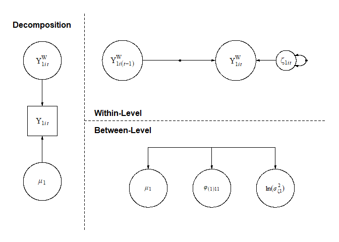
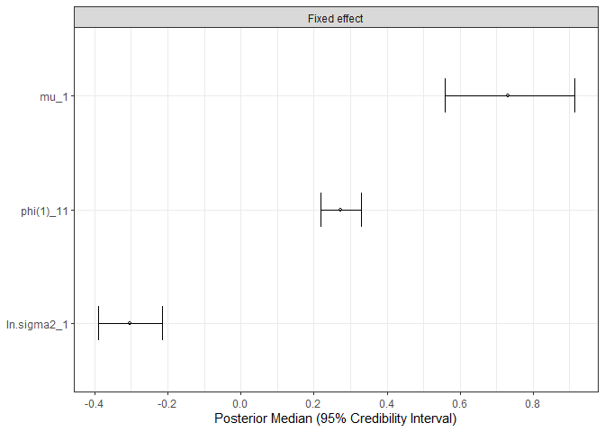

Overview
The mlts package allows fitting multilevel manifest or latent time series models and dynamic structural equation models (DSEM), as described in Asparouhov et al. (2018). It relies on Stan (Stan Development Team, 2023b) and the rstan package (Stan Development Team, 2023a) for Bayesian inference. The package is designed for researchers working with intensive longitudinal data, e.g., data from ambulatory assessment studies or experience sampling methods. Models allow for missing data, unequal numbers of observations across units, unequally spaced observations, and approximation of continuous time processes. Parameters can be subjected to restrictions (i.e., fixations or equality constraints) and latent variables can be incorporated using a measurement model. For the models hypothesized by the user, a LaTex formula and path models can be inspected, and model parameters can be plotted.
Installation
The most recent mlts release can be installed from CRAN via
install.packages("mlts")To install the development version from GitHub, you need to install the rstan-package first and configure your R installation to be able to compile C++ code. You can find instructions for both steps on the RStan GitHub. Afterwards, you can install the development version of mlts with
# install.packages("devtools")
devtools::install_github("munchfab/mlts")A Simple Example
One of the simplest models we can fit with mlts is a multilevel first order autoregressive model with only one observed variable. We start by specifying the model with mlts_model(). The argument q controls the number of time-series constructs. For this simple model, the following call is sufficient:
# build a simple autoregressive model
ar1_model <- mlts_model(q = 1)We can check the parameters present in the model by just calling the object:
ar1_model
#> Model Level Type
#> mu_1 Structural Within Fixed effect
#> phi(1)_11 Structural Within Fixed effect
#> ln.sigma2_1 Structural Within Fixed effect
#> sigma_mu_1 Structural Between Random effect SD
#> sigma_phi(1)_11 Structural Between Random effect SD
#> sigma_ln.sigma2_1 Structural Between Random effect SD
#> r_mu_1.phi(1)_11 Structural Between RE correlation
#> r_mu_1.ln.sigma2_1 Structural Between RE correlation
#> r_phi(1)_11.ln.sigma2_1 Structural Between RE correlation
#> Param Param_Label
#> mu_1 mu_1 Trait
#> phi(1)_11 phi(1)_11 Dynamic
#> ln.sigma2_1 ln.sigma2_1 Log Innovation Variance
#> sigma_mu_1 sigma_mu_1 Trait
#> sigma_phi(1)_11 sigma_phi(1)_11 Dynamic
#> sigma_ln.sigma2_1 sigma_ln.sigma2_1 Log Innovation Variance
#> r_mu_1.phi(1)_11 r_mu_1.phi(1)_11 RE Cor
#> r_mu_1.ln.sigma2_1 r_mu_1.ln.sigma2_1 RE Cor
#> r_phi(1)_11.ln.sigma2_1 r_phi(1)_11.ln.sigma2_1 RE Cor
#> isRandom prior_type prior_location prior_scale
#> mu_1 1 normal 0 10.0
#> phi(1)_11 1 normal 0 2.0
#> ln.sigma2_1 1 normal 0 10.0
#> sigma_mu_1 0 cauchy 0 2.5
#> sigma_phi(1)_11 0 cauchy 0 2.5
#> sigma_ln.sigma2_1 0 cauchy 0 2.5
#> r_mu_1.phi(1)_11 0 LKJ 1 NA
#> r_mu_1.ln.sigma2_1 0 LKJ 1 NA
#> r_phi(1)_11.ln.sigma2_1 0 LKJ 1 NAWhen mlts_model() sets up this model, all model parameters are free (i.e., not constrained) by default. On the within level, there are three fixed effects: the grand mean (mu_1) of the outcome, the autoregressive effect (phi(1)_11), and the natural log of the innovation variance (ln.sigma2_1). The (1) in brackets for the autoregressive effect parameter indicates a lag of first order, and the _11 subscript denotes that the first construct is as well predicted by the first construct. Note that for the innovation variance, the natural log is used to prevent the variance from dropping below zero. For each of these effects, random effects are also estimated on the between level, which are drawn from a multivariate normal distribution with zero mean. Standard deviations of random effects are indicated with a sigma_ prefix, and random effect correlations are indicated with an r_ prefix.
A TeX formula for the above model can be obtained by calling the mlts_model_formula() function on the model object. By default, the function produces an RMarkdown file and renders it to a pdf file using knitr. However, the TeX file can also be kept by calling keep_tex = TRUE within the function call.
mlts_model_formula(ar1_model)Furthermore, a path model can also be produced with the function mlts_paths() with many options for adjustment.

To fit the above model, we pass it together with the data set to mlts_fit(). The data set for this example is an artificial data set simulated from an autoregressive model:
head(ar1_data)
#> ID time Y1
#> 1 1 1 1.16
#> 2 1 2 -0.29
#> 3 1 3 0.40
#> 4 1 4 -0.18
#> 5 1 5 -0.66
#> 6 1 6 0.42We need to specify the variable in data that contains the time-series process in the ts argument and the variable that contains the unit identifier in the id argument. With the argument tinterval, the time interval for approximation of a continuous time process can be specified Asparouhov et al. (2018). We don’t specify it here, but see the Vignette Approximation of a Continuous Time Model for more details.
ar1_fit <- mlts_fit(
model = ar1_model,
data = ar1_data,
id = "ID",
ts = "Y1",
iter = 4000
)The model summary() shows general information about the model and data:
summary(ar1_fit, digits = 2)
#> Time series variables as indicated by parameter subscripts:
#> 1 --> Y1
#> Data: 2500 observations in 50 IDs
#> Model convergence criteria:
#> Maximum Potential Scale Reduction Factor (PSR; Rhat): 1.005 (should be < 1.01)
#> Minimum Bulk ESS: 574 (should be > 200, 100 per chain)
#> Minimum Tail ESS: 864 (should be > 200, 100 per chain)
#> Number of divergent transitions: 0 (should be 0)
#>
#> Posterior Summary Statistics
#> Fixed Effects:
#> Mean SD 2.5% 97.5% Rhat Bulk_ESS Tail_ESS
#> mu_1 0.73 0.09 0.56 0.91 1 4267 3055
#> phi(1)_11 0.27 0.03 0.22 0.33 1 2081 2724
#> ln.sigma2_1 -0.30 0.04 -0.39 -0.22 1 2445 2648
#>
#> Random Effects SDs:
#> Mean SD 2.5% 97.5% Rhat Bulk_ESS Tail_ESS
#> sigma_mu_1 0.60 0.07 0.48 0.75 1.00 3793 2800
#> sigma_phi(1)_11 0.13 0.03 0.07 0.20 1.01 709 910
#> sigma_ln.sigma2_1 0.23 0.04 0.15 0.32 1.00 934 1705
#>
#> Random Effects Correlations:
#> Mean SD 2.5% 97.5% Rhat Bulk_ESS Tail_ESS
#> mu_1.phi(1)_11 0.01 0.20 -0.39 0.41 1 2094 2947
#> mu_1.ln.sigma2_1 0.22 0.18 -0.16 0.55 1 2401 2345
#> phi(1)_11.ln.sigma2_1 0.12 0.26 -0.41 0.61 1 821 1899
#>
#> Samples were drawn using NUTS on Mon Dec 8 09:33:20 2025.
#> For each parameter, Bulk_ESS and Tail_ESS are measures of effective
#> sample size, and Rhat is the potential scale reduction factor
#> on split chains (at convergence, Rhat = 1).The line Time series variables as indicated by parameter subscripts: 1 --> Y1 shows that model parameters indexed by a _1 refer to the variable Y1 in the data set. The Model convergence criteria provide an overview across convergence diagnostics for all model parameters (i.e., also parameters which are not printed in the summary() by default). For the simple AR1-model, all parameters converged well after 4,000 iterations.
The section Fixed Effects provides information about the fixed effects in the model, i.e., , , and in the above formula. For example, the posterior mean of the autoregressive effect parameter phi(1)_11 is estimated at .27 with 95%-credible interval [.22, .33]. The log variance of the innovations is estimated at -.30.
The section Random Effects SDs shows standard deviations of the random effects , , and . The section Random Effects Correlations shows correlations between random effects. For example, while random effects of the person mean and the autoregressive effect display nearly no correlation, 0.01, there is a positive correlation between the person mean and log innovation variance, 0.22. This indicates that individuals with a higher person mean in the variable Y1 also tend to have a higher innovation variance.
The parameter estimates can also be plotted with the mtls_plot()-function. By default, forest plots of model parameters are produced. The what-argument controls what parameter types are plotted (e.g., fixed effects, random effect standard deviations, and other).
mlts_plot(ar1_fit, type = "fe", what = "Fixed effect")